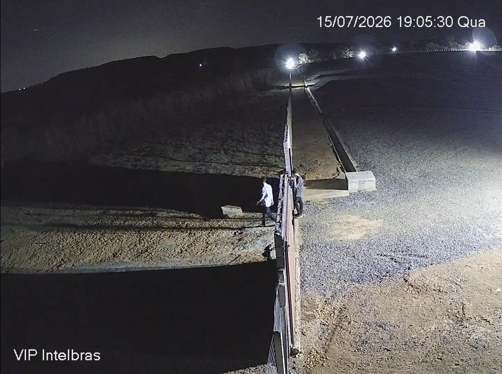
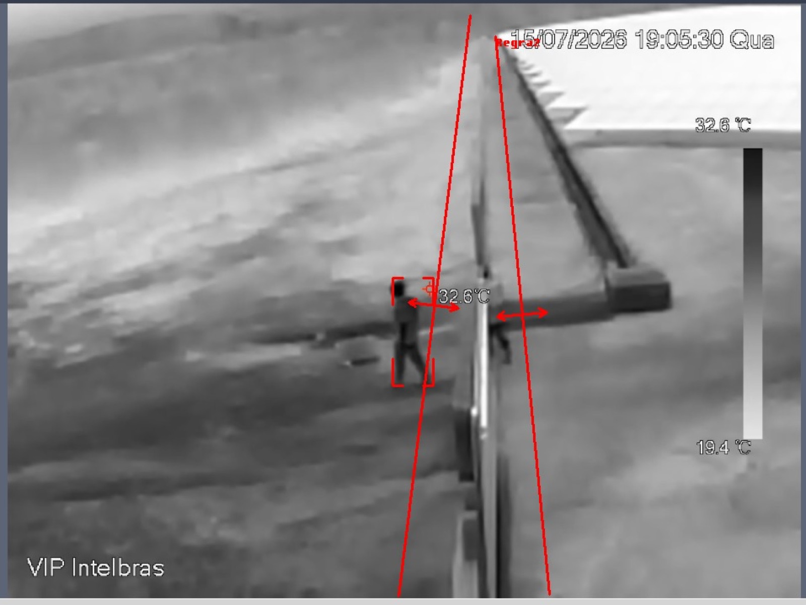
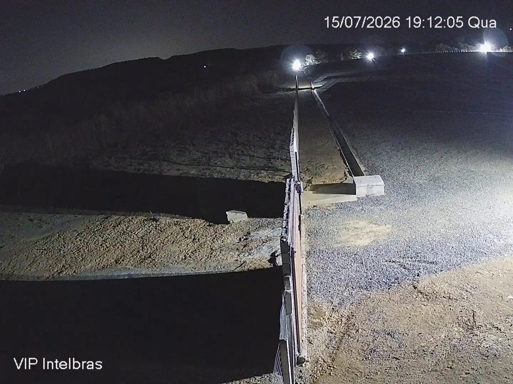
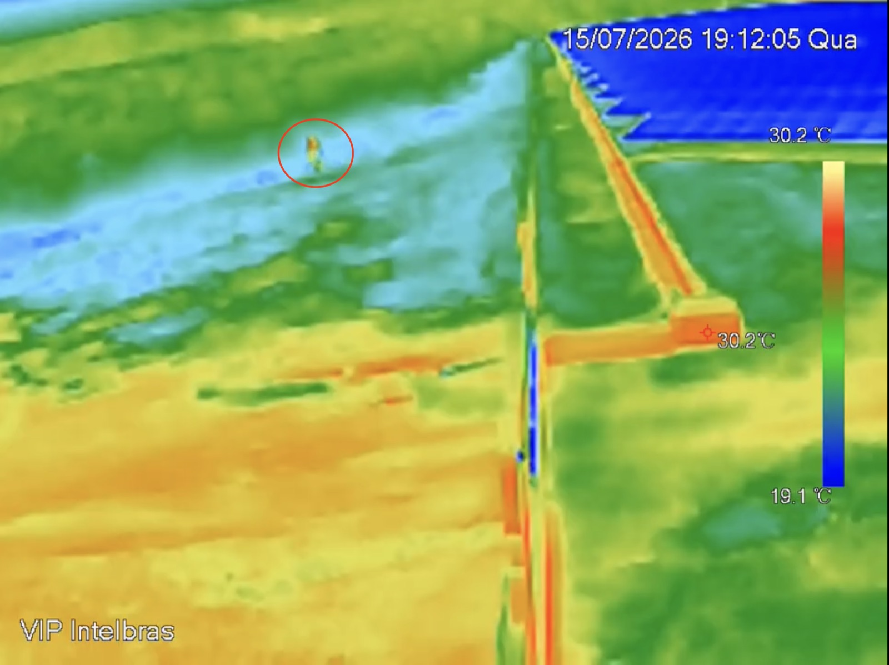
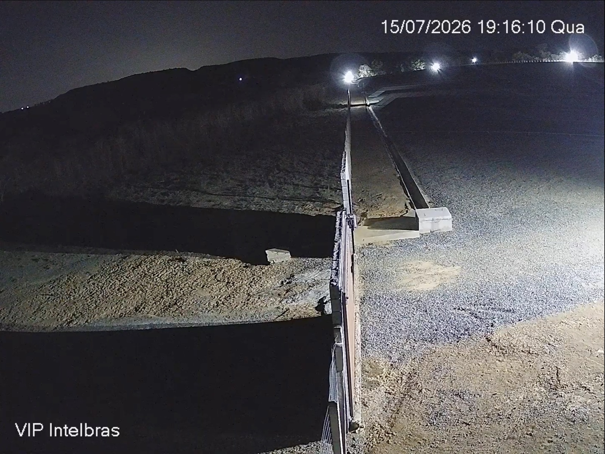
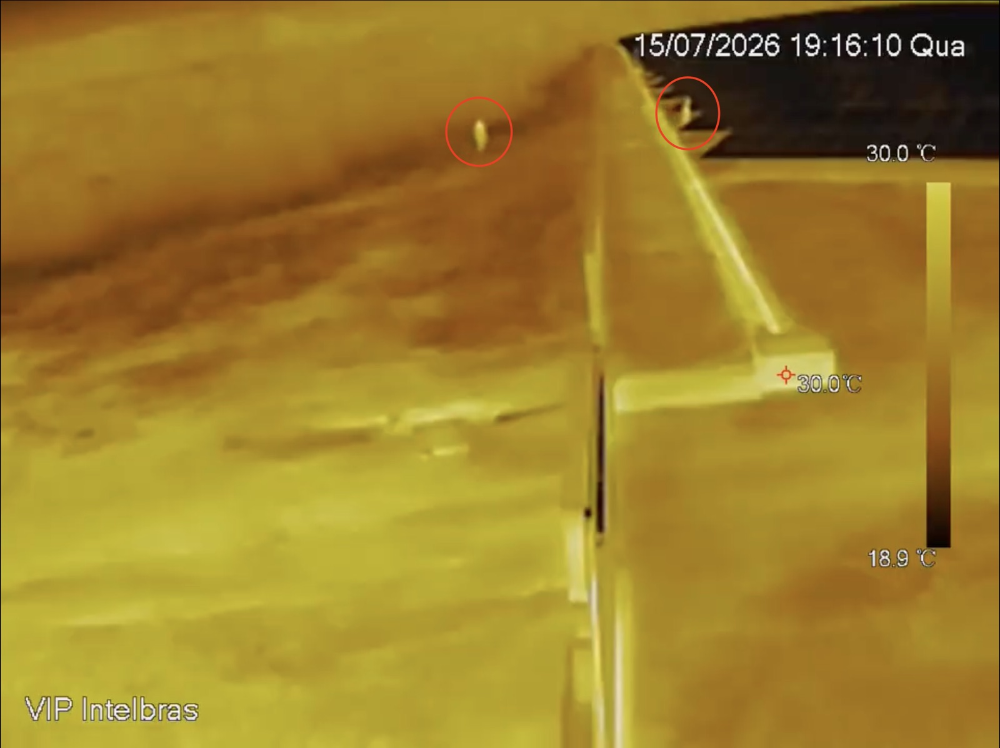
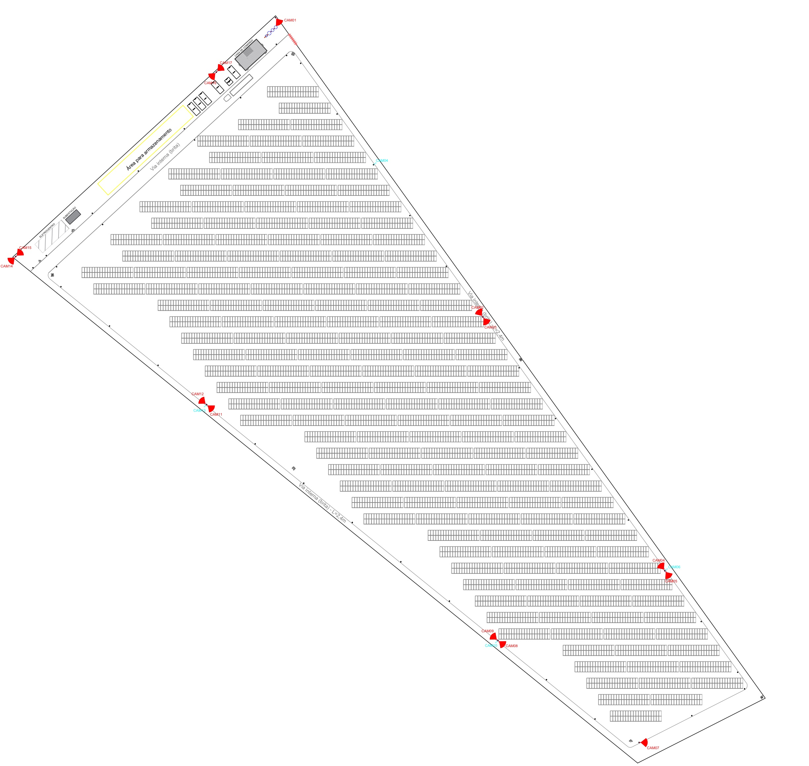

Substituição do CFTV de perímetro da usina por câmeras térmicas com analítico embarcado. O objetivo é ampliar a área coberta por ponto, garantir detecção em condição noturna e reduzir a quantidade de equipamentos instalados.




As capturas do próprio site delimitam o problema. Em condição noturna, a câmera convencional produz imagem utilizável apenas na área alcançada pelos refletores. O restante do enquadramento não carrega informação, e é exatamente por ali que se dá a aproximação ao perímetro.
Fora do alcance do refletor, o talude e a via de acesso não geram sinal. A limitação não é de resolução do sensor, é de ausência de luz refletida na cena.
Os refletores produzem estouro de brilho dentro do enquadramento. O controle automático de exposição ajusta pelo ponto claro e reduz ainda mais a leitura das áreas sombreadas.
Roupa escura sobre solo escuro elimina o contraste na faixa visível. Na faixa térmica o corpo humano permanece próximo de 32 °C e continua separado do fundo.
O pátio de brita gera material particulado em suspensão, que espalha a luz visível. O infravermelho de onda longa apresenta atenuação menor nessas condições.
Analítico sobre imagem visível dispara com sombra de nuvem, insetos próximos ao refletor e movimento de vegetação. O volume de alarmes improcedentes degrada o tempo de resposta da equipe.
O alcance noturno reduzido obriga o projeto a adensar pontos. Cada ponto adicional implica poste, infraestrutura civil, alimentação, rede, licença de VMS e manutenção própria.
Todo corpo acima do zero absoluto emite radiação infravermelha. O microbolômetro converte essa emissão em imagem, o que torna a captura independente de fonte de luz externa e estável ao longo de todo o período noturno.
Pessoa a 32 °C sobre solo a 19 °C resulta em diferencial de 13 °C. O alvo permanece destacado do fundo em toda a faixa de operação.
Dispensa refletor e iluminador infravermelho ativo. Reduz consumo, poluição luminosa e manutenção de luminárias.
Alvo quente sobre fundo frio eleva a taxa de acerto na classificação de pessoa e veículo e reduz o volume de alarmes improcedentes.
Com lente adequada, a detecção de pessoa opera na ordem de centenas de metros, o que permite cobrir trechos extensos de cerca por ponto.
As capturas são do perímetro da própria usina, com os arquivos normal e termal sincronizados pelo timestamp. Selecione um horário e desloque a linha de corte sobre a imagem.


A quantidade de câmeras de um perímetro é determinada pelo alcance útil de detecção de cada equipamento, não pela extensão da cerca. Em condição noturna o alcance útil da câmera convencional cai para a área iluminada; o da térmica se mantém.
| Critério | Câmera convencional | Câmera térmica |
|---|---|---|
| Alcance útil em período noturno | Limitado ao alcance do refletor ou do IR ativo | Mantém o alcance nominal integral |
| Cobertura por equipamento | Trecho curto de cerca | Trecho extenso, múltiplos vãos por ponto |
| Dependência de infraestrutura | Requer poste, refletor e alimentação de iluminação | Dispensa a iluminação dedicada |
| Alvo com vestuário escuro | Sem contraste utilizável | Detectado pela assinatura térmica |
| Poeira, neblina e chuva leve | Perda severa de imagem | Degradação reduzida |
| Alarmes improcedentes | Frequentes | Reduzidos, por contraste térmico |
| Confirmação de rosto e placa | Adequada sob iluminação | Não identifica, o que justifica o modelo híbrido |
| Aplicação adicional de engenharia | Não aplicável | Inspeção térmica de módulos e conexões |
A térmica assume a linha de detecção ao longo de todo o perímetro. As câmeras visíveis, em quantidade reduzida, permanecem nos pontos de identificação: portaria, acessos, casa de inversores e subestação. A divisão de função por tecnologia é o que reduz o total de equipamentos do projeto.
O sensor mede temperatura, o que permite identificar hot spots em módulos, conexões, string boxes e barramentos. Ponto quente é indicador precoce de conexão com resistência elevada, célula degradada e risco de incêndio. O mesmo ativo atende segurança patrimonial e manutenção preditiva.
O projeto executivo fecha em 18 pontos para todo o perímetro da usina, sendo 14 câmeras térmicas e 4 speed domes. A planta traz a locação de cada câmera sobre o arranjo real das mesas, das vias internas de brita e da divisa, com o respectivo cone de cobertura. É essa representação que permite verificar a sobreposição entre trechos vizinhos e confirmar que nenhuma face do perímetro fica descoberta.

Abrir em tamanho realNos nove pares comparados, a câmera térmica registrou presença humana no perímetro e a câmera convencional não registrou. A migração redimensiona o projeto pela cobertura real de cada ponto, o que reduz tanto a quantidade de equipamentos quanto a infraestrutura civil, elétrica e de rede associada a eles. O executivo fecha em 18 pontos para todo o perímetro da usina, sendo 14 câmeras térmicas e 4 speed domes.